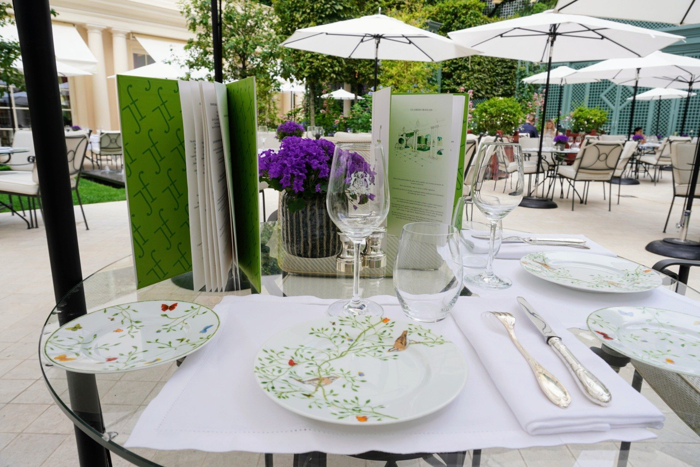
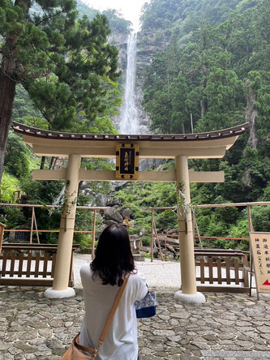
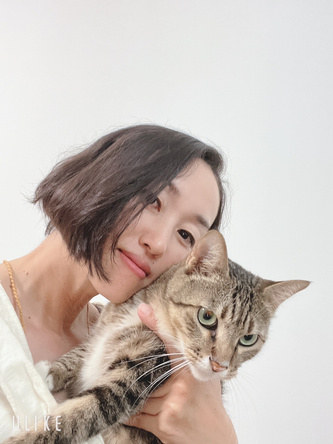
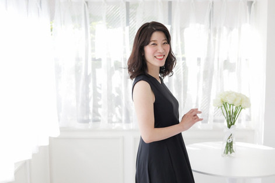
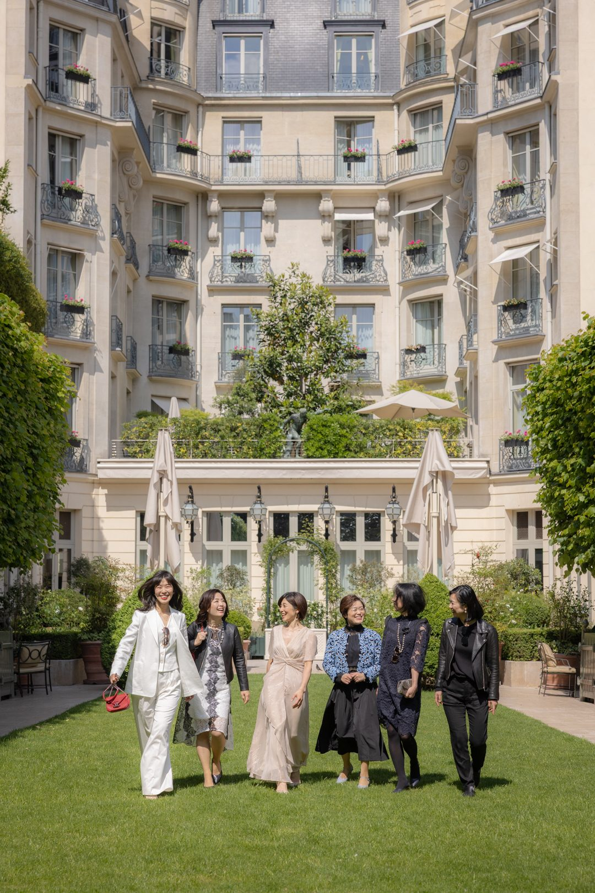
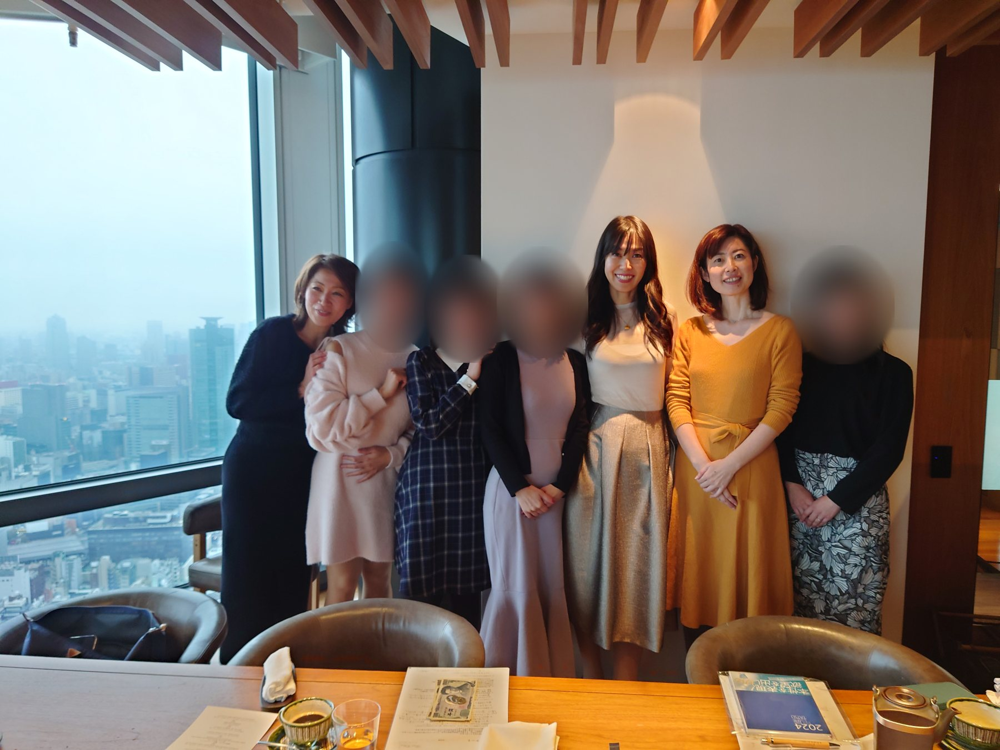
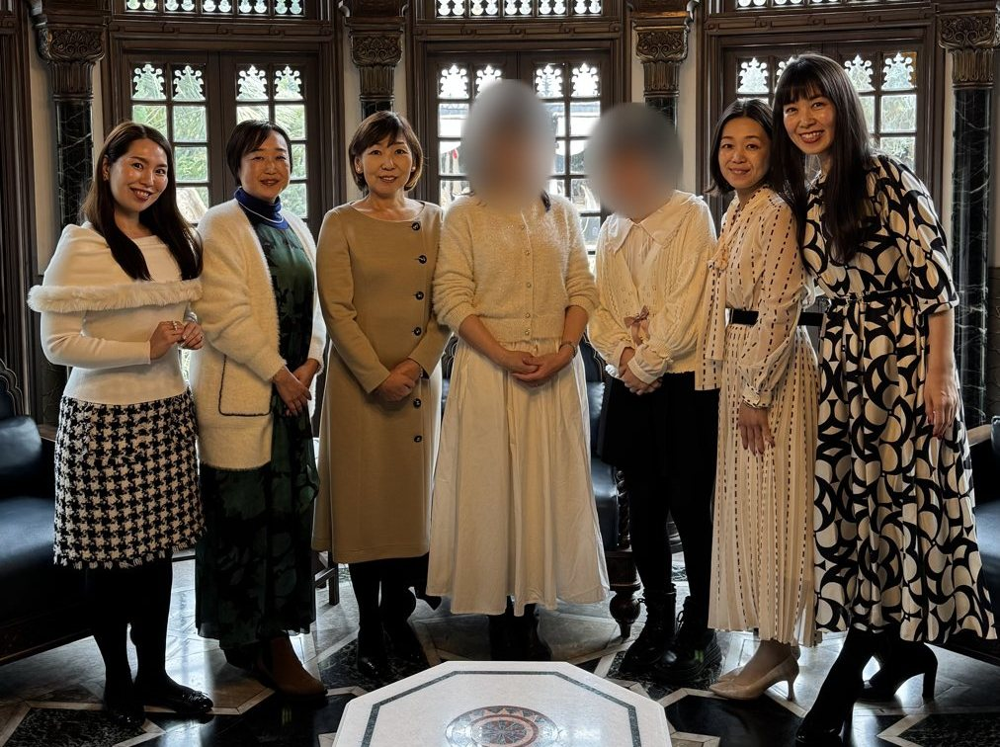

O.Nさん30代・ヨガ講師
幸せは感じていたけれど、何か足りない気がしていた。
「仕事量を減らすことができて、確実に前より幸福度が上がった！」

Begin your new chapter
その違いは、運の良さでも、努力の量でも、才能でもなく、
運を「知っている」か、「使っている」か。
ただ、それだけでした。
ファーストクラス帝王学
積み上げてきた経験と、運の流れ。ふたつを味方につけて、仕事も、お金も、パートナーも、暮らしも、「次のステージ」を自分で選んで、6カ月で形にしていく講座です。
Do you feel this?
40代、50代。仕事も、暮らしも、ここまで頑張ってきた。
それなのに、ふと立ち止まる夜がある。
受講前の声
「幸せは感じていたけれど、何か足りない気がしていた」O.Nさん・30代・ヨガ講師
「今に満足しながらも、『このままでもいいのかな？』と感じていた」SAさん・40代・主婦
ひとつでも当てはまったなら、このまま続きを読んでみてください。
The answer
人生が思うように動かないとき、私たちはつい、こう考えてしまいます。
「私は、運が悪いのかもしれない」
「努力が、まだ足りないのかもしれない」
「才能が、ないのかもしれない」
そうやって、自分を責めてきた方も多いと思います。
でも、答えはそのどれでもありません。
吉方位に行く。暦を見る。運気のいい日を選ぶ。
それだけで人生が動くなら、もうとっくに動いているはずです。
「いくら吉活しても、人を恨んだり憎んだりしては良い結果は起きないんですね」
運を「知る」だけでは、人生は1ミリも動きません。
人生を動かすのは、知った運を「使う」こと。
足りないのは、才能でも経験でもありません。
順番と、時期と、隣で一緒に動いてくれる人。
それだけです。
ファーストクラス帝王学は、これまで仕事も人生も頑張ってきた女性が、
本当の望みを言葉にして、運の流れを味方に、
自分の人生を自分で選び、動けるようになるための6カ月の講座です。
Paradox
意外かもしれませんが、運について熱心に学んだ人ほど、動けなくなることがあります。
「今月は、方位が悪いから」
「今年は、運気が落ちる年だから」
いつのまにか、知識が自分を縛る「制限」になってしまう。
「他のところで学んでしっくりこなかったけど、気持ちの制限が外れて視野が広がった！」
反対に、運のことをほとんど知らなかった人が、学び始めてから、驚くほど軽やかに動き出すこともあります。
違いは、知識の量ではありません。
知った運を、自分の望みのために「使っているかどうか」です。
Not wish, but use
運のいい日を、待つ。吉方位に行って、何かが起きるのを待つ。
多くの人は、運を「お願いするもの」だと思っています。
でも、ファーストクラス帝王学の考え方は逆です。
運は、自分が選んだことを叶えるために「使うもの」。
What
何を選ぶかは、自分で決める。
When
いつ動くかを、運の流れで決める。
これが、ファーストクラス帝王学の「運を味方につける方法」です。
主役は、いつもあなたです。
「運で決めるなんて、結局は人まかせでは？」
そう感じた方もいるかもしれません。実は、逆なのです。
占いに答えを出してもらうのではなく、自分の答えを、いちばんいい時期に実行するために使う。
だからこの講座の核は、ずっと変わりません。
自分の人生を、自分で選ぶ。
With you
運の知識は、本やネットでも手に入ります。
でも、レシピを何冊読んでも、
台所に立たなければ、料理は上手になりません。
知っていることと、
使いこなせることは、まったく別です。
ひとりでは、どこかで止まってしまう。
だからこそ6カ月、隣で一緒に動きます。
Six months later
想像してみてください。
人の正解ではなく、自分の答えで選んでいる。
やる気がある日も、ない日も、もう迷わない。
会いたい人に会いに行き、行きたい場所に行き、始めたいことを始めている。
仕事を続けるのか、減らすのか、新しく始めるのか。
そして何より、「自分の人生を、自分で選んでいる」という手ごたえが、毎日の中にある。
受講生の方々からは、こんな報告が届いています。
変化の形は一人ひとり違います。でも、大きく変わった方々に共通していたのは、「自分で選んだ」ということでした。
Why Kigaku
何を選ぶかは、自分の性質と強みから。いつ動くかは、運の流れから。
同じ努力でも、動く時期を選んだ人と、選ばなかった人。
半年後、1年後の差は、決して小さくありません。
ファーストクラス帝王学では、気学を縦糸に、自分を知ることから、望みを言葉にし、選び、動くところまでをつなげます。運の流れで、始める日・伝える日・会いに行く日を決める。だから、やる気に頼らずに動けます。
2027年の運勢は、当てるためではなく、選ぶために見る。
来年の運勢や吉方位を調べて、「当たっている」「当たっていない」で終わらせない。2027年、何を始めて、どこへ行き、誰に会いに行くのか。その計画に、運の流れを使います。
吉方位は、本来「吉の方法」。
方位だけでなく、考え方や生き方まで含めた言葉です。会いたい人に会いに行く。行ってみたかった場所を訪ねる。新しいことを始める。旅のワクワクも、毎日の小さな選択も、すべてが人生を動かす力になります。

Five steps
これまで人生が大きく動いた方々に共通していたことを、5つの順番にしました。
ファーストクラス帝王学の6カ月は、この順番で進みます。
生まれ持った星から、自分の性質と強みを知る。積み上げてきた経験も棚卸しします。
仕事、お金、パートナー、暮らし、自分自身。「本当は、どうしたいのか」を自分の言葉にします。
続ける、辞める、減らす、始める。自分が大切にしたいことを基準に、自分で選びます。
運の流れに合わせて、動く日を決める。選んだことを予定に入れて、実際に動きます。
仲間と報告し合い、節目に振り返る。やってみてわかったことから、次の選択へ。
What you will have
i
生まれ持った5つの星から、性質と強み、力を発揮しやすい場所がわかる。
ii
何を増やし、何を減らし、何を大切にしたいのか。望む生き方を、具体的に。
iii
いつ、何をするか。予定に入れられるところまで、一歩を具体的にします。
iv
伝えたこと。始めたこと。減らしたこと。続けたこと。小さな選択を重ねた半年が、これからの自分の土台になります。
頭の中の「いつか」が、カレンダーの日付になる。
選びたいテーマは、一人ひとり違います。
仕事や働き方を形にしたい方には、個別伴走で寄り添います。
Voices
ファーストクラス帝王学を受講された方の声です。
気学が仕事のどこに役立つのかを知りたくて受講。日々の浮き沈みの中でも自分の軸をぶらさずにいられるようになり、吉方位旅行で訪れたタイで、大きなビジネスチャンスにつながりました。
「このまま人生これでいいのかな」と、これだというビジネスが見つからずにいた頃。顔を出して伝える怖さを越え、ありのままの自分でビジネスを始め、副業収入が会社員並みになりました。
受講前は、毎日悶々として「闇の中にいるような状態」。講座を終えた2024年、新たな人生のゴールが考えられるようになり、会社の中で新規事業を立ち上げることになりました。
それから1年。講座を受けてから「こんな人と会えるんだ」というご縁が広がり、行動しないと何も変わらないことを実感。行動できる自分になりました。
O.Nさん30代・ヨガ講師
幸せは感じていたけれど、何か足りない気がしていた。
「仕事量を減らすことができて、確実に前より幸福度が上がった！」
SAさん40代・主婦
今に満足しながらも、「このままでもいいのかな？」と感じていた。
「本当にやりたいことが見つかり、夫も昇進を！」

E.Sさん60代・主婦
「吉活すれば幸せになれる」と思っていたのに、もやもやが続いていた。
「自分の本当の望みがわかりました」
M.Yさん会社員（教育・サービス業）
仕事も楽しくなく、コロナ後から特に鬱々としていた。いろいろ学んでも、効果を感じられなかった。
「講座に入る前のモヤモヤ、鬱々とした気持ちが、今では全く思い出せない程の変化に自分でも驚いています！」
「職場の人間関係がすっきり改善！」
JSさん主婦
イライラしていることが多い毎日。流行や人の目ばかり気にしていた。
「毎日イライラ、他人軸から自分に自信が持てるように！」
A.Kさん30代・教員
出かけたいと思っていたのに、どこに行きたいかもよく分からなかった。
「前向きに行動できるようになりました！」

Aさん会社員
「私にはできない」という不安で、なかなか動けなかった。やりたかった仕事で、はじめて収益を得る。
「帝王学はあくまで、自分を変える武器ですね」
「長い間悩んでいた人間関係も一気に解消しました！」

A.Fさんスタイリスト
伸び悩んでいた売上が、受講して3カ月で4倍に（ご本人の報告）。
「吉方位などの実践的なところだけでなく、メンタル面や価値観まで踏み込んでいて、人生全般の運が上がる仕組みになっているところが他の講座とは違います！」
S.Oさん40代・サロン経営
「無理だろうな」と思いながら書いていた売上が、らくらく達成できていた。
「お金のブロックが取れて、自分もお客さんも幸せに！」
Y.Yさんコンサルタント
効率よく仕事で結果を出したいと思って受講。講座開始早々、売上が2倍に（ご本人の報告）。
「効果がすごいので逆に怖い。でもせいこさんから学んでいるマインドのおかげで、冷静に考え、受け止め、行動できるようになりました。」
M.Fさん起業家・コーチ
講座を受講し、さらに吉方位を取って、わずか数カ月で、ご自身の事業だけでなく、アドバイザーをしているところでも世界進出が決定。
E.Wさん起業家
モニター募集した新講座の立ち上げを経て、法人を設立。
「1年前には思ってもみなかった位置に立っている。ここで振り返して次の段階に進みます」
（ご本人の投稿より）
ヨガ講師の方40代
吉方位に行っても変わっていない、と感じていた時期がありました。
「吉方位行っても変わってない。吉方位行ったあとも行動してる人は変わってる。私のペースでやっていこう」
「好きな人とだけ仕事してる、時間も自由になって」
元公務員の方40代
公務員から、酪農とメンタルトレーナーの道へ。
「迷いがなくなった。むしろ辞めてよかった」
元派遣社員の方30代
本を書き始め、派遣を終えて、移住。
「2倍の収入が入ってきた！」
音楽講師の方50代
「今の仕事を辞めたい」と思っていた。仕事の整理をするうちに、今の教室を続けながら、大人向けのレッスンを自分で企画し始めました。
「本当はやめたくないのかも！」
※ ご本人の感想・ご報告です。成果には個人差があり、講座の効果を約束するものではありません。



Community
学んだことを、実際に使いに行く。会いたい人に会いに行き、行ってみたかった場所を訪ねる。
一人では踏み出せなかった一歩も、同じ方向を向く仲間がいれば、軽やかになる。
「一人ではここまでできませんでした。同期生の変化が良い刺激になり、効果が拡大したように感じています。」
Program
時代の流れとゴールの決め方を学び、6カ月の目的地を言葉にする
自分の設計図と、これまでの経験の棚卸し
大切な人、一緒に働く人との関わり方。自分にとっての豊かさの基準
止まっていたことを動かす、小さな一歩
月・日の流れと吉方アクション。動いた記録
次の1年の計画
続ける、辞める、減らす、始める。
ゴールは「辞めること」ではなく、自分で選べるようになることです。
Support
Lecture
気学を縦糸に、知ることから動くことまで進みます。日程や進め方は、個別相談・受講案内でご案内します。
Community
吉方位の実践だけでなく、取り組んだことの進み具合や、自分に起きた変化も、仲間と共有します。
Standard
講義と同期の場に加えて、個別でも向き合います。内容は、個別相談・受講案内でご案内します。
VIP
Standardに加えて、個別の時間がより手厚いプランです。回数・時間などの詳細は、個別相談・受講案内でご案内します。
Option
発信や仕事の準備に、AIを使ってみたい方へ。詳細は、個別相談・受講案内でご案内します。

First Class Life Designer
目黒せいこ
数千人に届けることより、
一人の人生に深く関わること。
その方の言葉から始め、何を望み、何を選びたいのかを一緒に見ていく。
1年以上、節目ごとに伴走することも珍しくありません。
潜在意識セラピスト時代から、そうして一人ずつ向き合ってきました。
「ファーストクラスの開運帝王学」になってからだけでも、130名を超えます。
大切にしているのは、その方自身が選ぶこと。
自分の人生を、自分で選ぶ。
Course
First Class Life Design
ファーストクラス帝王学
6カ月プログラム
講義
全8回
あなただけの設計図
5つの星から性質と強みを読み解く
同期と報告し合う場
進み具合や変化も共有
個別のサポート
StandardとVIPからお選びいただけます
AI実践会
希望者向けオプション
受講料・お支払い方法・開講日
個別相談・受講案内の中で、ご案内します。
まずは、今のお気持ちと、これからのことを聞かせてください。
※この申込は、受講契約・お支払いではありません。
FAQ
はい。テーマは、生き方です。仕事、お金、パートナー、暮らし、自分自身。あなたが選びたいことから始めます。
はい。1カ月目は、目的地を決めるところから始めます。やりたいことがわからないのは、ここまで頑張ってきたからこそ。まず本当の望みを言葉にしてから、選び、動くところまで一緒に進めます。
はい。講座の中で、ご自身の2027年の運の流れと吉方位を一緒に見ていきます。目的は当てることではなく、選ぶこと。始める日、会いに行く日、動く時期を決めるために使います。
知った運を、自分の望みのために使うところまで、6カ月伴走することです。運勢を知るだけでは人生は動きません。何を選ぶかはあなたが決め、いつ動くかを運の流れで決める。その順番を一緒に実践します。
はい、歓迎です。気学の経験は問いません。
はい、歓迎です。知っている気学を、自分の望みと毎日の選択、行動につなげるのがこの講座です。学んできた方ほど、「使う」側に回る手ごたえを感じられるはずです。
はい。会社員・教員・経営者・士業・個人事業の方も受講されています。日程や進め方は、個別相談・受講案内でご案内します。
はい、対応しています。回数や条件は、個別相談・受講案内の中でご案内します。
Your life, your choice.
運を知って、終わりにする人。
運を使って、人生を動かす人。
同じ6カ月でも、たどり着く場所はまったく違います。
来年の今ごろ、「あのとき決めてよかった」と言っている自分と、「また1年たってしまった」と言っている自分。
どちらの自分で、2027年を迎えたいですか。
積み上げてきたものを、自分で選んだ「次」へ。
自分の人生を、自分で選ぶ。
その最初の一歩は、ここから。
※この申込は、受講契約・お支払いではありません。受講料・お支払い方法は、個別相談の中でご案内します。